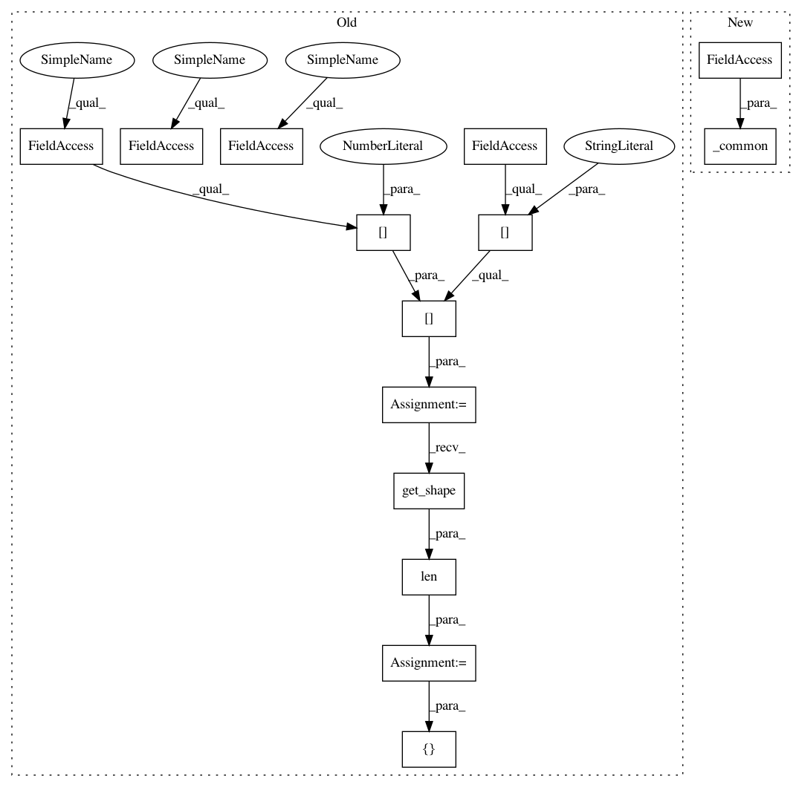

adc869e88b109af683ac94251165f96f7a406bba,onnx_tf/handlers/backend/reduce_log_sum.py,ReduceLogSum,version_1,#Any#Any#,12
Before Change
@classmethod
def version_1(cls, node, **kwargs):
x = kwargs["tensor_dict"][node.inputs[0]]
axis = node.attrs.get("axes", list(range(len(x.get_shape().as_list()))))
keepdims = node.attrs.get("keepdims", 1) == 1
return [tf.log(tf.reduce_sum(x, axis=axis, keepdims=keepdims))]
After Change
@classmethod
def version_1(cls, node, **kwargs):
return cls._common(node, **kwargs)
@classmethod
def version_11(cls, node, **kwargs):
return cls._common(node, **kwargs)
In pattern: SUPERPATTERN
Frequency: 3
Non-data size: 14
Instances
Project Name: onnx/onnx-tensorflow
Commit Name: adc869e88b109af683ac94251165f96f7a406bba
Time: 2019-10-04
Author: wtsang@us.ibm.com
File Name: onnx_tf/handlers/backend/reduce_log_sum.py
Class Name: ReduceLogSum
Method Name: version_1
Project Name: onnx/onnx-tensorflow
Commit Name: adc869e88b109af683ac94251165f96f7a406bba
Time: 2019-10-04
Author: wtsang@us.ibm.com
File Name: onnx_tf/handlers/backend/reduce_sum_square.py
Class Name: ReduceSumSquare
Method Name: version_1
Project Name: onnx/onnx-tensorflow
Commit Name: adc869e88b109af683ac94251165f96f7a406bba
Time: 2019-10-04
Author: wtsang@us.ibm.com
File Name: onnx_tf/handlers/backend/reduce_log_sum.py
Class Name: ReduceLogSum
Method Name: version_1
Project Name: onnx/onnx-tensorflow
Commit Name: c087a452bb944e2dea0a87f78476664f473f0bac
Time: 2021-01-13
Author: wtsang@us.ibm.com
File Name: onnx_tf/handlers/backend/tile.py
Class Name: Tile
Method Name: version_1